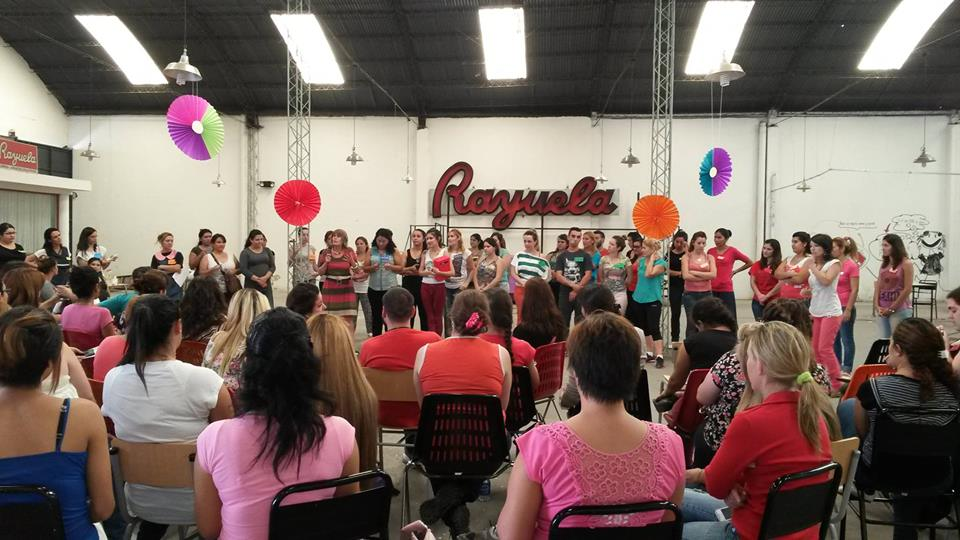
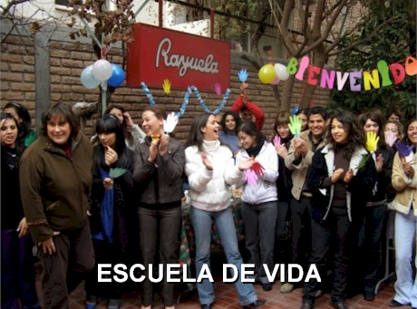

Institucional
Escuela de vida
El lema que presenta la institución no es un slogan publicitario. Es una vocación cultivada en años de sueños y ejercicios de cómo debe ser la educación para que la persona se desarrolle plenamente. Esto quiere decir, ni más ni menos, una persona con todas sus potencialidades, con la libertad y conocimiento para poder optar y pensar y con una conciencia ética responsable de su compromiso social.
Para que ese pensamiento se realice, todos los que estudian y trabajan en la institución tienen que contribuir con su creatividad y, sobre todo, con la buena voluntad de todos los días. Eso genera el clima de convivencia personalizante que se busca.
Hoy tenemos una oferta de servicios que siempre quiere ser creativa pero sobre todo útil. Por eso, la realidad es y será un campo inevitable para estudiar, interpretar y proponer acciones.
Quienes estudian y trabajan en la institución son actores que conviven con ese espíritu de búsqueda, servicio y creación.
¡¡Bienvenidos!!
Marco pedagógico
La orientación acompaña el ingreso, la estadía y el egreso del alumno. El desarrollo personal se inicia con el reconocimiento de la condición del sujeto, la adhesión a la propuesta educativa y la actitud de compromiso frente al desafío de la formación; continúa con la información y la tutoría durante los trayectos formativos; y culmina con la experiencia laboral-profesional de la instancia de egreso, como recursos y procesos necesarios para la sostenibilidad y realización de la persona.
Aprendizaje autónomo: aprender es una actividad individual y cooperativa. Todas las propuestas tienden a que el sujeto adquiera autonomía para buscar, apropiarse del conocimiento y resolver como profesional.
Aprendizaje en el aula: el aula es el ámbito especialmente dedicado para el trabajo del aprender porque se dispone del profesor que orienta y los compañeros que ayudan.
Se aprende en contexto: La realidad compleja de hoy es un desafío que se utiliza todos los días para el aprendizaje, porque cuando el estudiante egrese deberá convivir y actuar en esas condiciones.
La iniciativa y actitud investigativa: es un componente constante del aprender para que se pueda actuar con solvencia en un mundo en cambio.
La informática: es un recurso que se utiliza para la obtención, la producción y el tratamiento de la información, lo que permite crecer en diferentes aprendizajes.
Comunicación: la relación interpersonal, la producción escrita y el uso de las tecnologías informáticas, son dimensiones de la comunicación que estimulan y completan el crecimiento en el saber y el desarrollo personal.